Shell Eco-marathon Prototype BEV — Structural Analysis
In 2021, Team Shireto from IOE Thapathali Campus became the first electric-vehicle team from Nepal to enter the Shell Eco-marathon, competing in the Asia regional in the battery-electric Prototype class. As technical team lead, I led the vehicle design and the structural analysis (mostly with Anil, Yugen, Saugat and team). This page covers the part I'm proudest of: proving in ANSYS, before inspection, that our final welded aluminium frame met every structural requirement in the rulebook.
Quick specs
| Vehicle layout | Three-wheeled single-seater: two steered front wheels, rear hub-motor drive |
| Wheelbase | 1850 mm |
| Frame | Aluminium 6063 square tube, 25.4 mm × 2 mm wall, TIG-welded |
| Analysis tool | ANSYS Workbench — Static Structural |
| Element type | 1D beam elements with the real square-tube cross-section |
| Supports | Remote displacements at the two front wheel mounts and the rear wheel mount |
| Results reported | Maximum combined stress (axial + bending) and total deformation |
| Load cases | Roll bar 700 N vertical · Roll bar 700 N side · Harness lift · Driver 1G + 3G bump |
Virtual Technical Inspection video
Our VTI submission, premiered 15 April 2021.
What to watch for: the bare red frame from the side, with the 1850 mm wheelbase marked, is the same frame modelled in every analysis below. Near the end, the VTI checklist runs through the driver, dimensions, roll bar clearance, brakes, mechanical body design (solid floor and frame, bulkhead rigidity) and electrical safety.
Concept
The Shell Eco-marathon is about one thing: going as far as possible on as little energy as possible. That makes weight the enemy, and the frame is the single biggest structural mass on the car. Ours was 25.4 mm aluminium 6063 square tube with a 2 mm wall, TIG-welded, in a three-wheeled layout with two steered wheels at the front and a hub motor at the rear. Every tube in it had to earn its place.
But a light frame is worthless if it can't get through technical inspection. Because of the pandemic, the 2021 inspection was run as a Virtual Technical Inspection (VTI): instead of inspectors pushing on the car in the paddock, we submitted a video walking through the vehicle station by station. A video can show that a roll bar exists; it can't show that the roll bar is strong enough. That evidence had to come from analysis, so I built the structural case in ANSYS directly against the rulebook.
The structural requirements
What the rules ask of the frame, and the extra case I added.
Two rules in the Shell Eco-marathon rulebook put a direct load on the chassis. I turned each into a load case, then added a third, tougher case of my own for real-world driving.
- Roll bar strength. The roll bar must withstand a static load of 700 N applied in a vertical, horizontal or perpendicular direction without deforming. I modelled this as 700 N on top of the hoop, once vertically and once from the side.
- Safety harness lift. For Prototype vehicles, the harness check is done by lifting the car with the driver on board, hanging from the safety harness. I modelled this by fixing the frame at the harness anchor and letting every other load hang from it.
- Driver static bending, 1G + 3G bump (my own design case). Not in the rulebook, but a frame that only survives inspection isn't good enough. I wanted to know it would survive the driver hitting a bump on track.
Pass criterion: "without deforming" means no permanent deformation, so the peak stress in every load case has to stay well inside the elastic range of the aluminium. Elastic deflection that springs back is acceptable; yielding is not. I judged each result against a conservative allowable of 95 MPa, well below the parent-metal yield of 6063, to leave room for the softer heat-affected zones around the TIG welds.
Building the model
Why a 1D beam model, and how the car sits on its wheels.
A tube frame is a set of slender members joined at nodes, which is exactly what beam elements are made for. Rather than meshing every tube wall as a solid, I modelled each tube as a line with the real 25.4 × 2 mm square cross-section assigned to it. That keeps the model small and fast to solve, so I could iterate quickly on load cases, and it reports the combined axial and bending stress directly in each member. That's the quantity that matters for a frame like this.
The geometry follows the built frame: the floor rails and cross-members of the driver bay, the side bracing, the front section carrying the steering, the roll hoop behind the driver, and the rear stays running back to the hub-motor mount.
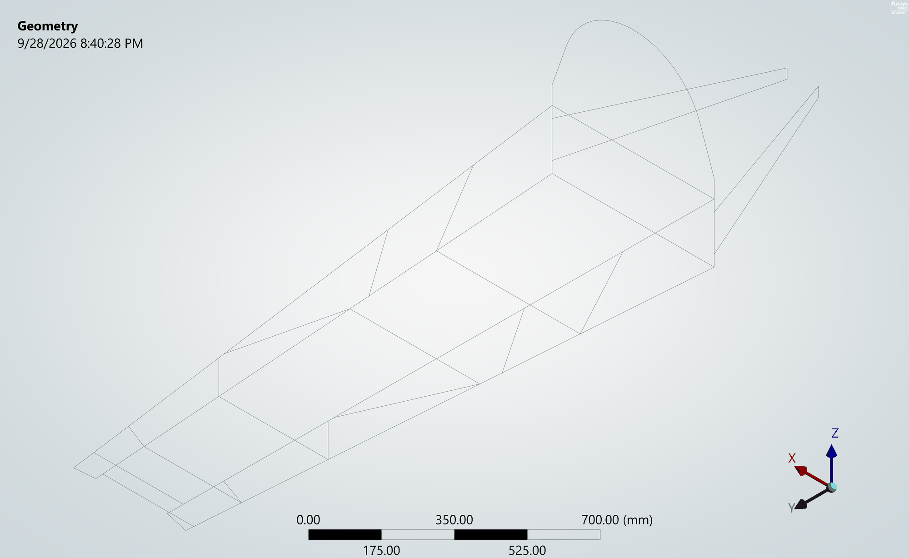
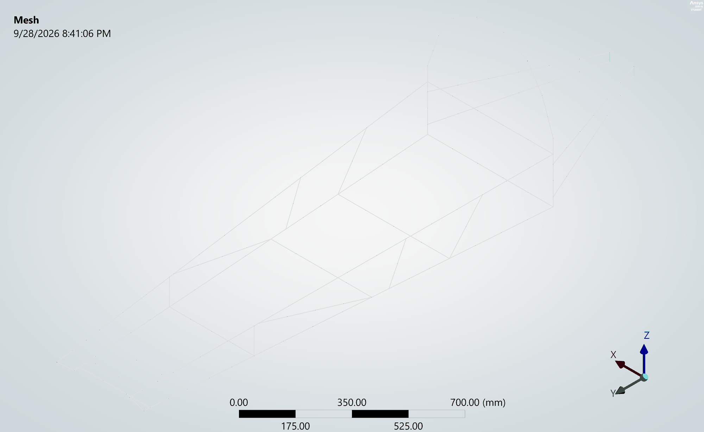
Supports
How you hold a model down decides what answer you get. A three-wheeler sits on exactly three contact points, so I supported the frame with remote displacements at the two front wheel mounts and the rear wheel mount. These represent the wheels and axles carrying the frame, rather than welding it rigidly to the ground, which would make it look stiffer than it really is. The same supports are used in all three wheel-supported load cases, so the results compare directly. The harness lift is the exception: there the car hangs from the harness anchor instead.
Load case 1 — Roll bar, 700 N vertical
700 N straight down on top of the roll hoop.
The first rulebook case pushes straight down on the top of the hoop, as if the car had rolled onto it. The load travels down both legs of the hoop into the floor of the driver bay and back along the rear stays to the motor mount.
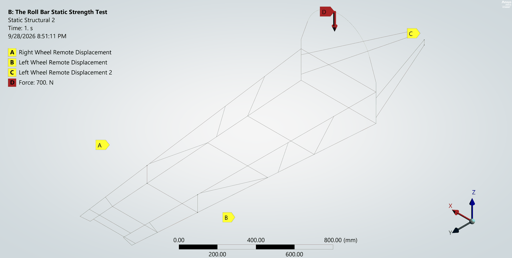
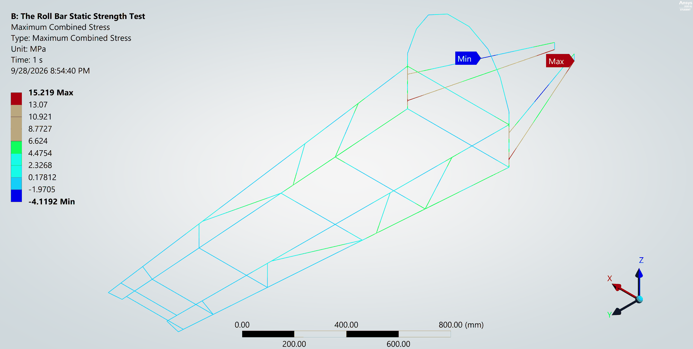
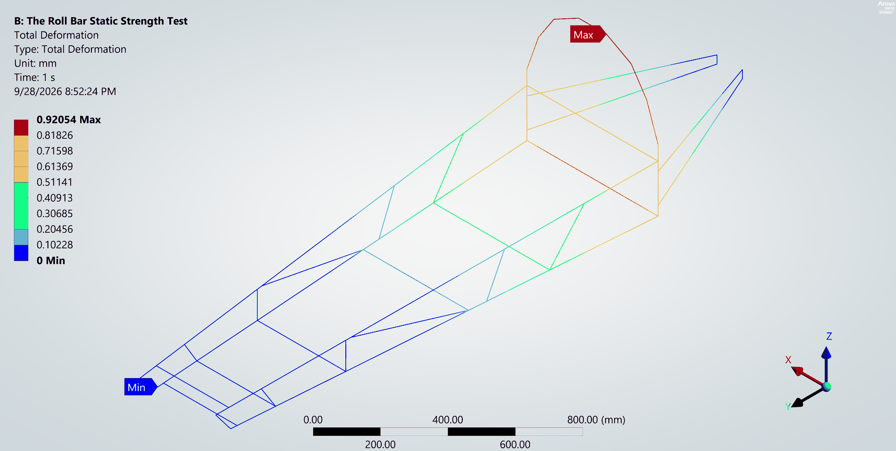
Peak stress was 15.2 MPa, in the rear stays that carry the hoop load back to the rear-wheel mount. The largest movement, 0.92 mm, was at the very top of the hoop, and it's entirely elastic. That's a factor of safety of about 6 against my allowable. Requirement met.
Load case 2 — Roll bar, 700 N side load
The same 700 N, now pushing sideways on the hoop.
The side load is the harder case for a roll hoop. Pushing down, the hoop's two legs share the load in compression. Pushed sideways, the hoop acts like a cantilever sticking up out of the floor, and the rear stays bracing it have to resist that bending all the way back to the rear-wheel mount.
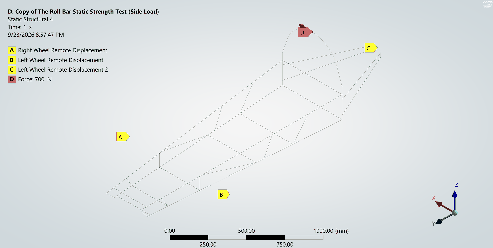
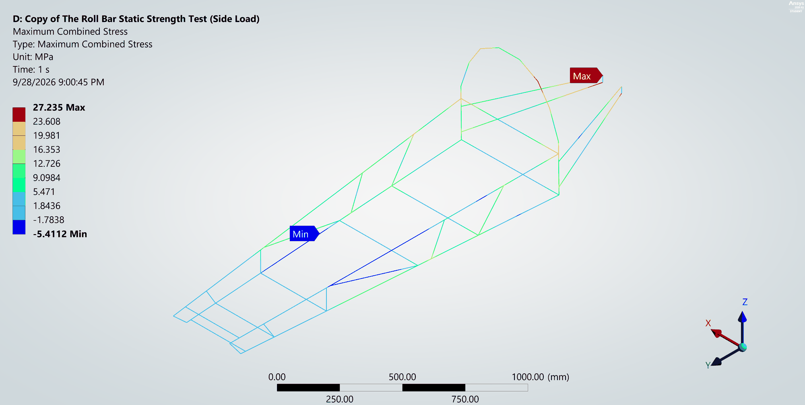
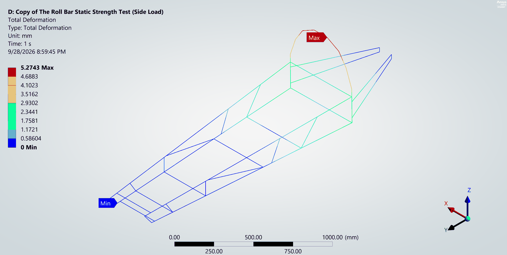
As expected, this was the worst case of the whole study. Peak stress rose to 27.2 MPa, in the rear stays where they meet the rear-wheel mount, and the top of the hoop moved 5.27 mm sideways. That's a noticeable amount of give, but it's still well inside the elastic range, so the hoop springs back with no permanent deformation. The factor of safety is about 3.5. Requirement met, and this case sets the margin for the frame.
Load case 3 — Safety harness buckle lift
The whole car, driver included, hanging from the harness anchor.
This case flips the problem around. Instead of sitting on its wheels, the car hangs from the harness, so I fixed the frame at the harness anchor point and let everything else hang from it. The loads were:
- Driver: 750 N, which is a 500 N driver with a 1.5× safety factor
- Rear motor and battery: 150 N at the rear
- The frame's own weight: standard earth gravity
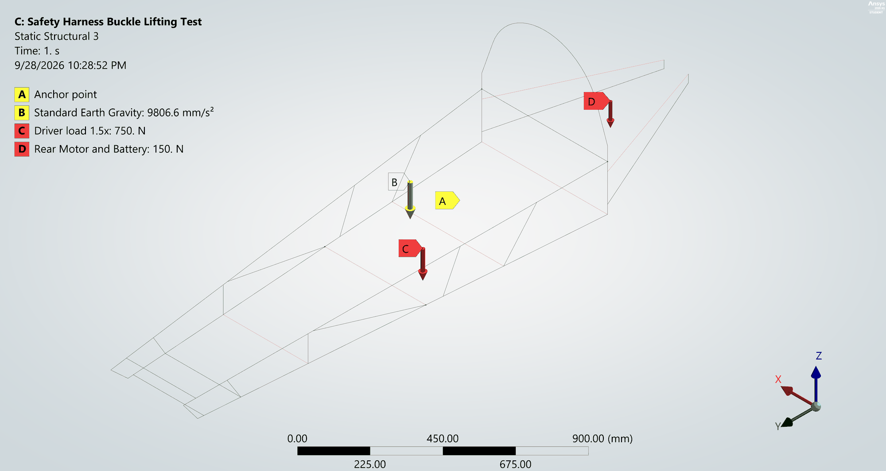
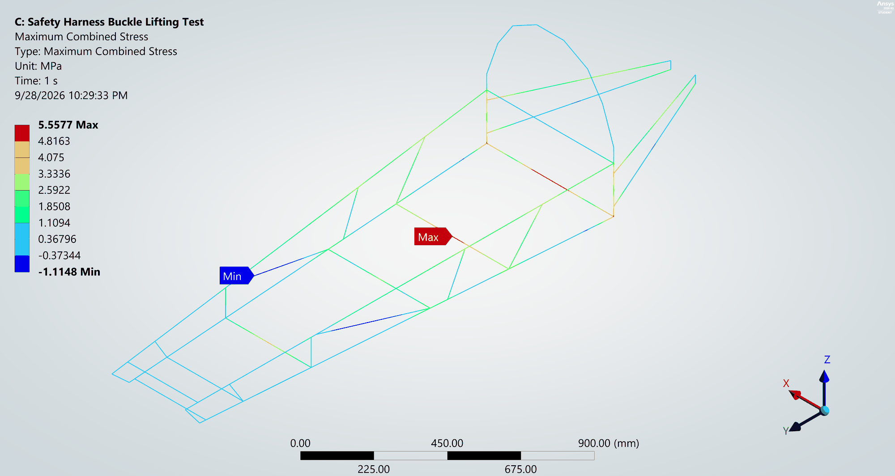
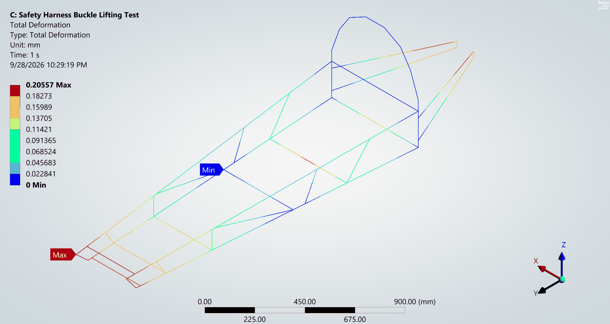
Peak stress was only 5.56 MPa, on the rear cross-member of the driver bay. The largest movement was 0.21 mm, at the front of the frame, which hangs furthest from the anchor. The factor of safety is above 15. Requirement met, by a wide margin.
Load case 4 — Driver static bending, 1G + 3G bump
Beyond the rulebook: the driver hitting a bump on track.
Passing inspection only proves the frame survives the inspection. To make sure it would also survive racing, I added a design case for the driver going over a bump. A 500 N driver at 1G of static weight plus a 3G bump gives 4 × 500 N = 2000 N, applied on the floor of the driver bay with the car on its three wheels.
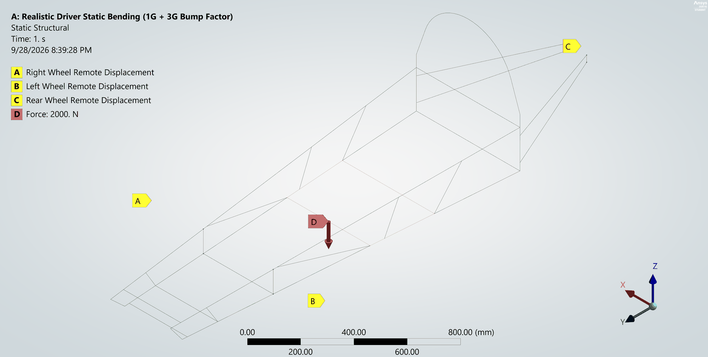
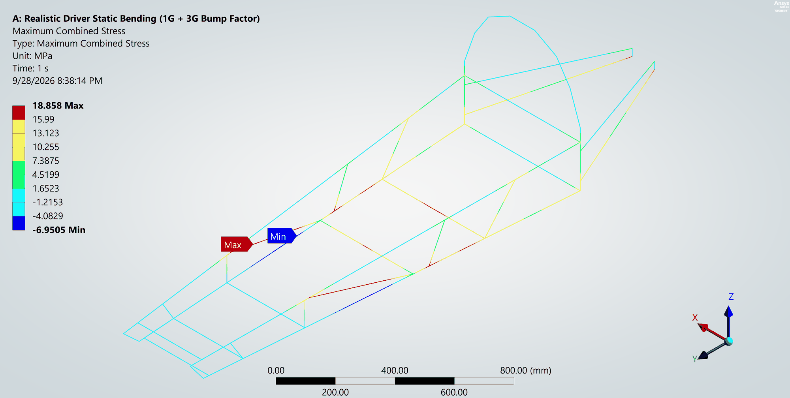
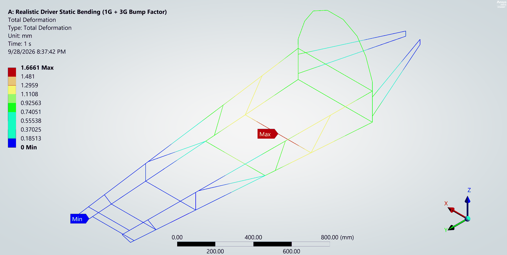
Peak stress was 18.9 MPa, on the lower side rail just ahead of the driver bay, and the centre cross-member directly under the driver sagged 1.67 mm. With a factor of safety of about 5, the frame handles a hard bump with plenty to spare.
Results
All four load cases side by side. Factor of safety is against a conservative 95 MPa allowable.
| Load case | Peak stress | Peak deformation | FoS | Status |
|---|---|---|---|---|
| Roll bar — 700 N vertical | 15.2 MPa | 0.92 mm | ≈ 6.2 | Met |
| Roll bar — 700 N side | 27.2 MPa | 5.27 mm | ≈ 3.5 | Met |
| Safety harness lift | 5.6 MPa | 0.21 mm | > 15 | Met |
| Driver 1G + 3G bump (2000 N) | 18.9 MPa | 1.67 mm | ≈ 5.0 | Met |
Taken together: every load case stayed comfortably in the elastic range, so nothing in the frame deforms permanently. The roll bar side load governs the design, at a factor of safety of about 3.5, with the stress concentrated in the rear stays at the rear-wheel mount. That's exactly the joint I'd reinforce first if the car ever needed to carry more.
Outcome
With the structural requirements backed by analysis and the rest of the car documented station by station in our inspection video, Team Shireto passed the Virtual Technical Inspection at Shell Eco-marathon Asia 2021. That put Nepal's first electric entry in the Shell Eco-marathon through to the competition.
Lessons learned
- Turn the rulebook into load cases. Each structural rule maps to a boundary condition and a load. Writing them out explicitly, the hoop load direction and the harness anchor as the only support, meant the analysis answered the inspector's actual question, not a generic one.
- Supports matter as much as loads. Remote displacements at the three real wheel mounts let the frame flex the way the real car does. Rigidly fixing those points would have made the frame look stiffer, and the deflections smaller, than reality.
- Check the direction that hurts. The same 700 N produced almost twice the stress and nearly six times the deflection from the side as from above. A hoop that passes vertically tells you very little about the side load.
- Pick the element that fits the structure. For a welded tube frame, 1D beam elements give the member stresses that matter at a fraction of the cost of a solid mesh, which made it practical to run every case and iterate quickly.
- Design past the inspection. The 1G + 3G bump case isn't in the rules, but it's the load the frame actually sees on track. Passing inspection is the minimum, not the goal.
What's next
The rule names three roll bar directions, and I simulated two. The next step is the fore-aft (front-to-back) 700 N case to complete the set. Beyond that, a beam model treats every joint as a perfect connection, so I'd like to build a local shell or solid model of the most loaded joint, where the rear stays meet the rear-wheel mount, to look at stress concentration at the welds, and of the harness mounting brackets, which a 1D model can't see.
Files & links
Inspection video and the competition rules.